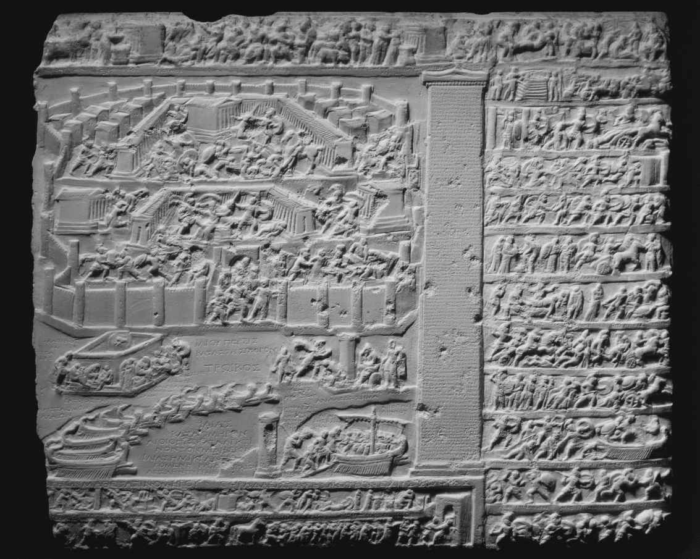

在所有的古代文学形式中，史诗不仅声誉最高，也最有可塑性，历史最悠久。古典世界战乱频发，无论是对立的希腊城邦之间，还是罗马与那些胆敢抵制她扩张势力的国家之间，连年兵戎相见：罗马的雅努斯 [1] 之门只有在完全和平的时候才会关闭。公元前29年，凯撒的继承人（未来的奥古斯都）200年来第一次关闭了拱门，在长达七个世纪的整个罗马史上，这也不过是第三次。在战火纷飞的社会，赞美并探讨军事英雄主义、忠诚和阳刚气质等概念的文类当然始终有着独特的现实意义或持久美誉。
荷马的《伊利亚特》和《奥德赛》无论在叙事技巧和人物塑造上，还是在语言的应用和天马行空的奇思妙想方面，都是古典文学的上乘之作。它们从希腊暗淡的“黑暗时期”（迈锡尼文化衰落之后，公元前1200—前776年这段时期）脱颖而出，宛若奇迹，对后来希腊—罗马文化的影响无可匹敌。在古代版的《荒岛唱片》 [2] 中，提前被放入行李的会是荷马的史诗，那是古典世界的皇皇巨著，相当于后来的《圣经》和莎士比亚作品。西方文学的起源似乎是一个双重悖论：荷马的作品是最早的，也是最优秀的；而荷马本人堪称有史以来最伟大的诗人，我们却对他一无所知。不过好在这两个都不是什么严重的问题：《伊利亚特》和《奥德赛》或许是现存最早的希腊文学作品，但事实上它们是已经延续了好几个世纪的口头史诗传统的巅峰之作，而对荷马其人的无知并不影响我们欣赏他的诗作。
和几乎所有的古典史诗一样，荷马所写的特洛伊战争和奥德修斯重返伊萨卡岛的故事也发生在一个众神与英雄的神话世界里。希腊史诗传统及所记述的特洛伊城陷落大概有其历史内核，让人联想到公元前12世纪初希腊攻打西北小亚细亚（如今的土耳其），然而当历史变成英雄诗，它必然会变成一种虚构。到公元前8世纪末荷马生活的时代，早有数代吟游诗人为适应各自的时代和观众的需要，把特洛伊战争的故事改编得面目全非了。原本为复杂的军事和政治原因而起的冲突变成了一场为女人（特洛伊的海伦）而战的战争，诗化的夸张也留下了印记：十年征战，一个由1 186艘希腊舰船组成的大型舰队，诸如此类。最值得关注的是荷马诗歌中对逝去的英雄时代的怀念，那变成了史诗传统的一个主旋律，从诗中描写荷马式武士比今人更加孔武有力的句子就可见一斑：“我们当代人/只有华年壮士才勉强能用双手/把那块石头抱起。”（《伊利亚特》第十二卷，第381—383行） [3]
要了解荷马的文学成就，首先必须考察一下他所继承的口头史诗传统。荷马的诗歌是为现场表演而作的，即便他识文断字（对此我们并无十分把握），他也是从其他从事表演的吟游诗人那里学到史诗这项技艺的。其后很多年，他不断完善自己的诗歌，通常每次只表演很短的片段而非整部作品（要演完整部《伊利亚特》，大概需要26个小时）。和其他云游四方的艺术家一样，荷马也急于招徕更多的观众，因而很注意为自己的技艺做宣传：《奥德赛》里的吟游诗人菲弥俄斯声称，这种技艺既是苦练所得，也得益于神赐的灵感：“我自学歌吟技能，神明把各种歌曲/灌输进我的心田。”（第二十二卷，第347—348行） [4] 而两部史诗的核心英雄阿基琉斯和奥德修斯都被比作史诗诗人，奥德修斯为长弓上弦也被类比为吟游诗人给竖琴调弦（《奥德赛》第二十一卷，第406—411行），亦绝非巧合。
《伊利亚特》虽然体量巨大（近16 000行诗），却只涉及特洛伊战争的一小段，重点只有交战第十年，也就是最后一年的短短四天时间。正如亚里士多德所说（《诗学》第二十三章），荷马避免了某些后代史诗诗人所犯的错误，他们试图从头到尾记述所选神话的每一场事件，最终把史诗变成了一连串乏味的事件经过（“事件a发生了，紧接着是事件b，然后……”）。相反，荷马从特洛伊陷落的故事中选取了一个单独完整的情节（阿基琉斯的愤怒）并就此展开，运用倒序和伏笔的方法，使他的叙事涵盖整个战争，从海伦最初被特洛伊王子帕里斯劫持（希腊出征的原因）一直到特洛伊被毁，城中幸存者悉数被掳为奴。如此巧妙地运用时间（过去、现在、未来）是《伊利亚特》精细复杂构思的最佳典范之一。
我们把荷马史诗中的主要人物称为英雄，但有必要弄清楚“英雄”在这一语境中的含义。“英雄”一词会让我们想起某个做出毫不含糊的正面表率之人：比方说冲进一幢失火的大楼去救人的消防员。然而在古希腊文化中，“英雄”——神和人结合孕育的后代，并非单纯的正面人物，而多具有过激的特征，无论好坏。英雄能够做出超乎常人的行为，有着令人钦佩的非凡技能。但他们的英武之气是一把双刃剑，因为它也可能会激发不尽如人意的品质：震怒、暴力、残酷、傲慢、鲁莽和自负。因此，英雄主义本身就有一种内在的矛盾：英雄拥有的能量既让他们非同寻常，也会带来动荡和危险（对英雄本人和他人而言都是如此）。《伊利亚特》和《奥德赛》都是成熟的史诗作品，不仅赞美那个不畏艰险的英雄世界，也探索了英雄主义本身的复杂性。
《伊利亚特》的核心情节是阿基琉斯因为希腊同胞没有对他表示敬意而愤怒，随后退出了战斗。眼看着希腊人万分焦急，他仍拒绝战斗，于是他的朋友帕特罗克洛斯代他出战，却死于特洛伊领袖赫克托尔之手。阿基琉斯悲痛万分，最终被复仇的渴望驱使着重返战场。但他表现出了灭绝人性的暴怒，因为他不仅杀了赫克托尔，还毁坏他的尸体，把尸体拖在自己的马车后面飞奔。这是极不道德的行为，因为它违犯了保护死尸的一个基本禁忌，也威胁到赫克托尔入土为安的基本人权。多亏诸神的干预阿基琉斯才结束了他那可耻的行为，在他们的关心下，阿基琉斯见到赫克托尔的父亲普里阿摩斯，最终归还了赫克托尔的尸体。正是在这次与敌人的见面中，阿基琉斯总算恢复了同情和尊重的态度，《伊利亚特》认为，这些都是正人君子的必要品质。普里阿摩斯以阿基琉斯的父亲裴琉斯的名义恳求阿基琉斯，当阿基琉斯仿佛在这位特洛伊国王的脸上看到自己父亲的悲伤和痛苦时，两人一同哭泣起来：
（《伊利亚特》第二十四卷，第509—512行） [5]
阿基琉斯给予普里阿摩斯和赫克托尔以应有的尊重，才算摆脱了自己毁灭性的偏执和悲痛，并认识到了他人的人性。
众神对于凡人的关注以及他们不断干涉人间事务是荷马史诗最值得关注的方面之一。然而荷马笔下的诸神并不仅仅是文学人物：他们表达了一种连贯的神学。古希腊没有国教，也没有经书为宗教信仰提供指导，诗人们便扮演了影响宗教观念的重要角色，荷马在这方面无人能及，他是一切教育的基础——包括希腊人对自己的诸神的观念。但要理解希腊宗教，就必须摒弃不当的（特别是基督教）神学观念，后者认为神本质上必是善良和仁慈的。因为虽然希腊（和罗马）的诸神的确关心人类，但他们绝非无私，他们对荣誉的看重一点儿也不亚于英雄。如果神的荣誉受损，就像特洛伊王子帕里斯把阿芙洛狄忒选为最美丽的女神而得罪了赫拉和雅典娜（《伊利亚特》第二十四卷，第25—30行），她们为了复仇，一点儿也不比震怒的英雄仁慈半分，这时她们超乎凡人的神力就意味着她们的复仇会更加恐怖。于是赫拉与丈夫主神宙斯做了一笔冷酷的交易，只要特洛伊被捣毁，她愿献出她最钟爱的三个城邦（阿尔戈斯、斯巴达和迈锡尼）（第四卷，第50—54行），并且毫不掩饰自己对特洛伊人的憎恨：“我却不能让仇敌特洛伊人遭受不幸？”（第十八卷，第367行） [6]
凡人与神之间横亘着巨大的鸿沟：诸神享有永恒的生命，而凡人终将湮没在冥府。这一基本差异，即凡人必死，通过特洛伊人的同盟格劳克斯的一个比喻得到了有力的表达：
（《伊利亚特》第六卷，第146—149行） [7]
然而悖论就在于，英雄必死本身却让他们拥有了诸神所缺少的一种肃穆的悲剧力量。由于诸神“必然永世安康，长生不老”，他们不会面对生死攸关的危险。换句话说，诸神的力量和不朽身躯就意味着他们无法以人类的孤注一掷来表现自己的勇气和耐力，因而反比人类略逊一筹。正如一位古代评论家所说：“荷马竭力为《伊利亚特》中的人赋予神性，却又把神写成了人。”（“朗吉努斯”，《论崇高》9.7）
《伊利亚特》描述了战场上的压力，而《奥德赛》却通过奥德修斯这个人物探索了一种全然不同的英雄主义，这位“足智多谋的壮汉”不得不动用自己的智慧和计谋，克服返乡归家途中的诸多障碍。这样看来，《奥德赛》就是一部英雄流浪和返乡的故事，全世界许多文化中都有这样的故事。在这一故事模型中，英雄一般滞留在外，家人因他远离故土而备受苦难和煎熬，然而这位英雄最终克服重重障碍，救回了自己的妻子和家人。于是，在《奥德赛》的开头，特洛伊战争已经结束了十年，但奥德修斯还没有归家，他的家中一片混乱：一百多个骚乱又傲慢的求婚者争相要娶奥德修斯的妻子佩涅洛佩为妻，他的幼子特勒马科斯想要制止他们，却无能为力。
该诗的前半部分写到了奥德修斯自特洛伊陷落之后的冒险，我们看到他在返回伊萨卡的路上屡屡遇险：例如在食莲人的地盘上，美味的忘忧果让吞食者忘记了家乡的一切；在独眼巨人波吕斐摩斯的洞穴里，巨人杀死并吃掉了奥德修斯的许多船员；还有在魔女基尔克的岛上，魔女把奥德修斯的手下变成了猪，还把英雄留在岛上做她的情人长达一年之久。下半部分写到了奥德修斯在伊萨卡化装成一个乞丐，奋力夺回自己的家室和恢复英雄身份的过程。他和儿子特勒马科斯杀死了追求者，分别20年后，奥德修斯与佩涅洛佩终于团聚了。
因此，《伊利亚特》描述了整个社会（特洛伊王国）被彻底摧毁的悲剧故事，而《奥德赛》则更为浪漫和乐观，讲的是英雄重返社会，让它恢复稳定。但尽管《奥德赛》的场景更偏向家庭，它仍然涉及了贯穿《伊利亚特》全书的荣誉和复仇等概念，因为求婚者们无耻的行为绝不能逃过惩罚。求婚者们屡次受到警告却置若罔闻，继续肆无忌惮地享用奥德修斯家人的款待，甚至还计划谋杀特勒马科斯。有些现代评论家认为将他们悉数杀死的做法难免过分，但这样做完全符合古代希腊社会的伦理道德，即惩罚虽然无情，却是意料之中的（求婚者们非常清楚自己多么无法无天），因而合情合理。
当然，奥德修斯完成使命的最终目标，即叙事高潮，是与妻子佩涅洛佩团聚。全诗非常清楚地表明，佩涅洛佩不但美若天仙（只要她来到宴会厅，出现在求婚者们面前，他们就为之发狂），也聪颖过人。的确，她证明了自己的智慧绝不在奥德修斯之下，甚至比足智多谋的奥德修斯还略胜一筹。因为当他满身沾着求婚者们的鲜血站在她面前时，她拒绝相信此人就是她的丈夫。不过她知道他们的婚床是奥德修斯在房屋初建之时用橄榄树的树干制成的，因而坚固难移，就命人把床挪开，这刺激了愤怒的奥德修斯，使他讲起了制作婚床的故事（这是只有他和佩涅洛佩两人知晓的秘密），这才让妻子相信了他的身份。佩涅洛佩的小把戏表明她的冰雪聪明和伶牙俐齿都可与丈夫媲美，因而证明了他们为夫妻团圆而历尽艰险都是值得的。
在荷马之后过了好几个世纪，才出现了另一部完整保留下来的史诗的作者，即罗德岛的阿波罗尼俄斯，他的《阿尔戈英雄纪》创作于公元前270—前245年前后。在这四卷书中，阿波罗尼俄斯叙述了阿尔戈英雄探寻金羊毛的故事，金羊毛来自一只神奇的公羊，由一条不眠不休的毒龙看守。伊阿宋带人乘船从希腊的伊俄尔科斯到达黑海最东端的科尔基斯国（如今的格鲁吉亚）国王埃厄忒斯的宫殿，在那里，伊阿宋和国王的女儿美狄亚坠入爱河，美狄亚盗取金羊毛，和伊阿宋一起逃回了希腊。这是一个古老的神话：荷马也曾在奥德修斯的冒险故事中用伊阿宋的冒险作为原型，阿波罗尼俄斯又对荷马史诗进行了再加工，用希腊化时期“亚历山大里亚派”（见第一章）典型的博学和文雅的文风创作了一部史诗。
亚历山大里亚派诗人们认为，荷马的拙劣继承者们创作的史诗陈腐、臃肿又重复，就通过新的方式发展了这一文类，强调篇幅短小、精巧微妙和引经据典。反对缺乏创意的风格往往是文学变革的驱动力（例如，可参照浪漫主义对新古典主义“规则”的排斥），阿波罗尼俄斯的史诗以高度成熟的风格实现了该文类的彻底革新。诗人骄傲地展示自己的博学，把科学、地理和历史研究的新发现写入自己的英雄故事：阿芙洛狄忒拥有一个宇宙球，那是阿波罗尼俄斯的时代天文学的最新成就（第三卷，第131—141行）；阿尔戈英雄们在返回希腊的途中经过了多瑙河、波河和罗纳河，甚至还必须带着自己的船只穿越利比亚沙漠；全诗贯穿着各种故事，解释当时的仪轨礼节、地名和纪念物的起源。埃及的托勒密王朝何以任命阿波罗尼俄斯担任威望很高的图书馆馆长和皇室导师，就不难理解了。
荷马笔下的奥德修斯是人人皆知的“足智多谋”之人，但《阿尔戈英雄纪》中的叙述者却把伊阿宋描写成一个“缺乏智谋”或“茫然无措”的人，他面对使命常常显得力不从心。如此一来，阿波罗尼俄斯笔下的伊阿宋就被贬成次一等的英雄，乏味无趣，但这样理解却有些不得要领：阿波罗尼俄斯知道他的读者熟悉伊阿宋和美狄亚那个广为人知的神话故事，其中伊阿宋最终会为了另一个女人而背叛自己的妻子，美狄亚为了报复，杀死了她和伊阿宋的两个孩子，因此在阿波罗尼俄斯笔下，伊阿宋对美狄亚帮助的依赖就让他们的爱情故事有了一种悲剧的反讽。人们公认全书的高潮在第三卷，年轻善感的美狄亚一下子爱上了眼前这位英俊的陌生人。阿波罗尼俄斯从内到外描述她的爱情，对她的心理和生理欲望的描写反映了希腊化时期最新的医学理论：美狄亚的痛苦灼烧着她，“一股暗火在炙烤，极度地灼痛了她那/脆弱的神经与头颅下方的筋腱——/悲痛对那里的刺激最为强烈”（第三卷，第762—764行） [8] 。事实证明，阿波罗尼俄斯笔下这位苦恋且脆弱的女主人公为史诗这一文类做出了极为重要的贡献，特别是影响了维吉尔笔下的狄多。
李维乌斯· 安德罗尼库斯版本的《奥德赛》创作于公元前3世纪中期，我们对它以前的拉丁语史诗一无所知。虽然我们有十分的把握认为，关于意大利人伟大的祖先和昔日英雄的歌谣已经传唱了数个世代，但它们无一流传下来，而且到李维乌斯的时代，拉丁语史诗这个文类已经被彻底希腊化了。然而同样，李维乌斯的作品虽然是对荷马的逐字翻译，却也全然是罗马人的创作，借用希腊神话来表达罗马人的价值观：正因为如此，比方说，说英雄“如神一般”这一标准荷马式写法就不符合罗马人的宗教情感，因此李维乌斯把它替换为“最伟大的第一流人物”。那以后不久，奈维乌斯就用罗马本土的主题写下了第一部拉丁语史诗：他的《布匿战纪》不仅反映了他本人作为士兵与迦太基人战斗的经历，也开创了罗马人对历史史诗的偏爱（相比于希腊人），或至少是类历史史诗，而不是以传说中的过去为背景的故事。
要颂扬罗马在这一时期异乎寻常的军事功勋和扩张，史诗乃是最完美的体裁。因此，维吉尔之前最重要的拉丁语史诗——恩尼乌斯的《编年纪》，就涵盖了罗马的整个历史，从特洛伊陷落之后埃涅阿斯到达意大利，一直写到恩尼乌斯本人在公元前169年去世之前。到他去世之时，罗马已经称霸地中海世界了。恩尼乌斯开篇即大胆地讲述了一个梦境，梦中荷马的鬼魂出现在他面前，透露他已经（为图近便）附身于恩尼乌斯了。但这位志向远大的罗马荷马也读过亚历山大里亚派希腊语诗人的作品，并向他们的博学广识看齐，自称“dicti studiosus ”，就是拉丁语的“文学学者”。恩尼乌斯对罗马崛起的记述使得他的史诗成为罗马价值观的体现，罗马的黩武精英阶层自幼便熟记他精练的格言，如“罗马共和国依靠礼仪和长者方能巍然挺立”，用拉丁语写下的这句话（moribus antiquis res stat Romana virisque ）前四个词的首字母拼出来就是MARS，即战神。恩尼乌斯的诗旋即成为经典，是好几代罗马人在学校里学习的课文，直到后来被维吉尔的《埃涅阿斯纪》取代。
维吉尔的史诗讲述了特洛伊英雄埃涅阿斯行至意大利，克服重重困难，在那里建造新家园的故事，那就是罗马的起源。因此这是一个建国故事，就像美国清教徒国父们的故事一样。在意大利，埃涅阿斯的传说可以追溯到公元前6世纪，但随着罗马势力的扩张，它变成了罗马历史和民族身份的一个基本元素，维吉尔与他之前的奈维乌斯和恩尼乌斯一样，重写了这个神话，表达了他自己时代的焦虑和希望（见图2）。维吉尔在公元前1世纪20年代写作该史诗时，边写边诵读自己的作品，它的品质立即得到了认可和赞赏：例如，与他同时代的诗人普罗佩提乌斯就宣称，“一部比《伊利亚特》更伟大的作品正在孕育诞生”（2.34.66）。的确，维吉尔的史诗不久就在罗马文学和文化中获得了极高的地位和威望，堪比荷马之于希腊人的声望，因此维吉尔之后，几乎每一位古代作家（无论是诗人还是散文作家，非基督徒还是基督徒）都在某一时刻与《埃涅阿斯纪》有过文学创作上的对话。
在该史诗的前半部分（第一到第六卷），我们看到特洛伊船队在驶向意大利的途中被一场风暴吹到了北非的迦太基，在那里，埃涅阿斯对女王狄多讲述了特洛伊城的陷落，以及他的子民在其后多年四处漂泊寻找新家园的故事。狄多和埃涅阿斯坠入爱河，英雄忘记了自己的使命，朱庇特不得不派墨丘利前来提醒他。但当埃涅阿斯离开时，狄多自杀了，临死时对埃涅阿斯和他的子孙发出了诅咒。埃涅阿斯于是前往冥府，见到了他的父亲安奇塞斯的鬼魂，后者向他透露了罗马未来的光荣前景。第二部分（第七到第十二卷）描写了英雄在意大利本土的战斗。埃涅阿斯受到拉丁族（意大利诸部落之一）国王拉提努斯的热情接待，国王接待了他派来的和平使团，并主动提出把自己的女儿拉维尼亚嫁给埃涅阿斯。但其他人，包括拉维尼亚的母亲阿玛塔，则憎恶这些特洛伊移民，战争不久就爆发了。埃涅阿斯前去拜访厄凡德尔，后者的城池就位于未来的罗马，厄凡德尔把幼子帕拉斯托付给埃涅阿斯，让他带着这位初出茅庐的武士参加即将爆发的战争。然而敌对的意大利部落首领图尔努斯却杀死了帕拉斯，致使埃涅阿斯发狂般地使用暴力。当埃涅阿斯和图尔努斯最终面对面单打独斗时，埃涅阿斯战胜了后者。听到图尔努斯乞求饶命，埃涅阿斯正要放了他之际，忽然看到帕拉斯挂剑的腰带，那是图尔努斯从年轻人的尸体上摘下来的。刹那间，爱、悔恨和愤怒的情感一同涌来，埃涅阿斯杀死了图尔努斯。

图2 公元前1世纪末，布维利（位于罗马东南约12英里处）附近的一块大理石碑的微型复制品，上面描绘了特洛伊的陷落和埃涅阿斯出发“西行”去寻找新家园。这块石碑的雕工极为精细，它残存的部分（大概11平方英寸）上雕刻了大约250个人物，刻画了《伊利亚特》和其他希腊史诗中有关特洛伊被毁的场景
早期的罗马史诗逐个记载了罗马历史上发生的大事件，直到作者本人的时代，但维吉尔却遵循荷马的先例，创造了一种更为复杂和有趣的叙事，背景虽然是传说中的过去，却也展望罗马历史的未来。虽然罗马本身是在埃涅阿斯的时代很久以后由罗慕路斯和雷穆斯建立的，但整部《埃涅阿斯纪》充满了对罗马建筑、仪式和风俗的预言，特别是在埃涅阿斯游览未来罗马的胜迹之时（第八卷），在那里，我们听说了罗马的广场、塔尔皮亚岩、卡匹托尔山，如此等等。
正如荷马既写到了战争的荣耀，也写到了饱受其苦的受害者，维吉尔也成功地创造了一部史诗，既赞美罗马和罗马人的权力，同时也直面它的历史，特别是近代的连年内战留下的创伤。朱庇特承诺未来的罗马人，也就是意大利人和特洛伊人通婚融合后创造的民族，会有一个“远界寰宇之涯的帝国”（第一卷，第279行），安奇塞斯还解释了这个帝国应如何治理：
（《埃涅阿斯纪》第六卷，第851—853行） [9]
然而这样一个公序良俗的愿景并不符合诗中对罗马起源的宏大描述，即未来的罗马人（意大利人和特洛伊人）彼此杀戮，而像狄多这样很有同情心的人物也因为挡住了罗马的道路，而遭到了毁灭。
《埃涅阿斯纪》关于罗马史的光荣和灾难两方面的思考就概括在奥古斯都本人出场的段落中。奥古斯都作为尤利乌斯氏族的一员，声称自己是埃涅阿斯之子尤路斯的后代，诗中有好几段赞扬他让罗马重归和平，甚至开启了罗马历史上的第二个黄金时代——安奇塞斯在冥府向埃涅阿斯展望未来的罗马英雄人物时如是说。奥古斯都在内战中获胜的确为饱受战争蹂躏的罗马带来了和平（当然是满足他的条件的和平），我们没有理由怀疑《埃涅阿斯纪》中为此成就对他表达的感激之情。然而由于该诗对损失和苦难的探讨更引人注目，这使得许多人在讨论其中的政治格局时，最重要的问题仿佛变成了该诗是亲奥古斯都还是反奥古斯都的问题。但这样的视角未免太过狭隘，因为这首诗的主题更多是数代内战造成的混乱和创伤，而不是奥古斯都本人。
全诗最后一幕的骇人场景最能体现这一点，埃涅阿斯怒不可遏，杀死了无力抵抗的图尔努斯。虽然他的父亲建议“对臣服的人要宽大”，埃涅阿斯却无法手下留情。和《伊利亚特》一样，《埃涅阿斯纪》全书写至此，一直认定宽大仁慈是令人钦佩的德行。从某个角度来看，埃涅阿斯的愤怒是可以理解乃至合情合理的，因为他急于为被图尔努斯杀死的帕拉斯报仇。但维吉尔用细腻的笔触把最后一场战斗描写成同类相残，这些自我毁灭的形象也就使得最后一幕成为罗马内战期间大屠杀的生动体现。因此《埃涅阿斯纪》一方面体现了对未来的希望和对和平的渴望——例如，正如图尔努斯被杀为英雄时代的意大利的战争画上了句号，奥古斯都的胜利大概也能终结当代罗马的流血杀戮——另一方面又非常清醒地知道，正如埃涅阿斯在最后一幕中所表现的那样，暴力随时可能再度爆发。
维吉尔之后的每一位拉丁语史诗作者都必须设法更好地利用维吉尔的文学成就。奥维德应对这一挑战的方法是采用了一个更大的主题（大至整个宇宙历史），并前所未有地探索了史诗这一文类的可塑性，创作了《变形记》这样一部极为多样化的作品，以至于后世将它描述为戏仿史诗甚或反史诗。长达15卷的《变形记》记录了宇宙的历史，从创世之初直到奥维德自己的年代（奥古斯都在公元8年流放奥维德时，全诗刚刚完成）。但记录的方式非常巧妙，是通过讲述逾250个希腊和罗马的变形神话完成的，从卷一阿波罗追求达芙妮，她为了躲他而变成了一棵月桂树，一直到卷十五中把尤利乌斯· 凯撒奉作神圣。维吉尔在自己的史诗中融入了其他很多文类，例如狄多和埃涅阿斯的爱情就混用了爱情诗和悲剧，而奥维德进一步发展了这一手法，创造了一种形式尤其多样混杂的史诗，恰如其分地表现他关于在不同形式之间变化的主题。
性与幽默是特别突出的主旨，因为许多变形都是由欲望激发的，通常是某个神对女人的情欲，突出了男性/天神的残忍无情，而叙事风格中充斥着机智诙谐的语言和文字游戏。奥维德甚至开了《埃涅阿斯纪》的玩笑，仅用四个字就总结了特洛伊的陷落（维吉尔用了整整一卷）：“Troia simul Priamusque cadunt. ”（卷十三，第404行，意为“特洛伊灭亡了，普里阿摩斯也殉国了” [10] ）作为以希腊—罗马神话形式写成的世界史，《变形记》就是罗马人改革希腊文化的极佳典范，而作为一部以奥维德高度可视化的想象力重写的神话百科全书，它对后世艺术家和作家的影响甚巨。然而它同时也是最神秘的古代文学文本之一，因为奥维德随处可见的诙谐让人很难分辨他那些关于凯撒和奥古斯都的笑话有多少严肃的成分，他对人类身份（人与神、人与兽有何区别等）的质疑有多深刻。现代人的解读往往追求时髦，处处可见意识形态上的抵制，不过你会觉得，奥维德的鬼魂大概正用托加袍的长袖掩住嘴，窃笑他们的一本正经呢。
与《埃涅阿斯纪》（以及与《变形记》）的对话，是公元1世纪重要拉丁语史诗作品的一个关键特征：卢坎的《内战纪》是尼禄在位时写下的；斯塔提乌斯的《底比斯战纪》、瓦勒里乌斯· 弗拉库斯的《阿尔戈船英雄纪》以及西利乌斯· 伊塔利库斯的《第二次布匿战争》都创作于弗拉维王朝（韦帕芗和他的两个儿子提图斯和图密善当政）的时代。虽然每一部作品都根据当代罗马世界灵活地表现了自己的历史或神话主题，其中最成功的却是卢坎的史诗，他不仅创造了一种与众不同的风格——巴洛克式修辞、哥特式暴力描写，以及沉迷于超自然和荒诞现象——而且还延续了《埃涅阿斯纪》探索罗马内战之遗产的做法。在该诗开头几行，卢坎描述了自己的主题，凯撒与庞培的冲突摧毁了共和国，因为“战争……比内战更糟，给犯罪披上了合法的外衣”（第一卷，第1—2行）。叙述者借助斗兽场上的暴力和表演，写到“有一对格斗者始终存在于我们中间，一边是自由，一边是凯撒”（第七卷，第695—696行），并说明了自由（libertas ）最后是如何被消灭的。《埃涅阿斯纪》中关于奥古斯都会创造一个更和平美好的社会那点儿有限的希望破灭了，事实证明，随之而来的帝国体制把卢坎和他的同时代人全都变成了同一个暴君治下的奴隶。卢坎的史诗往往被称为“反《埃涅阿斯纪》”，但这种看法忽略了维吉尔本人对未来的暴力的担忧；尽管如此，《内战纪》仍然果敢地探索了“疯狂”（furor ），卢坎认为那是自野心勃勃的军阀在共和国末期崛起以来，罗马历史的主旋律。公元65年，卢坎参与了一场企图让另一位（不那么专制的）皇帝取代尼禄的阴谋，事情败露之后他自杀了，年仅25岁。
在古代读者看来，史诗这一文类是由韵文形式（以六音步扬抑抑格写成的诗歌，这是史诗的独特格律）而不是主题定义的。所以在本章最后，我们来考察一种截然不同的古代史诗形式，即教谕诗，它宣称自己的目的就是教育读者，主题多样，包括务农、狩猎、哲学和科学等。虽然话题各异，但一切教谕诗都有一个共同特点，即教师与学生之间的互动，它建立在诗人与他在诗中的受话者（或“学生”）之间关系的基础上，并进而延伸到了我们这些诗外的读者（或“学生”）。谁也不喜欢被说教，因此诗中的受话者既能让诗人说出自己的训导，又不像是在威逼读者。每个诗人处理这一基本三角关系的方式不尽相同，因此读者通常会被引导着认为自己就是那位受话者，但也有可能把受话者看成是应该避免的反面教材。
现存最早的教谕诗《工作与时日》就构建了后一种关系，鼓励读者比诗中的受话者更加积极上进。这首诗由赫西俄德（几乎是荷马的同时代人）写于公元前7世纪初，是一部关于自我提升和诚实劳作的沉思录，赫西俄德在诗中教导他的花花公子兄弟珀耳塞斯当如何过好自己的生活。赫西俄德精心建构出自己和兄弟这两个角色，为全诗关于努力劳作和公正公平的中心主题服务：赫西俄德是一个生硬粗暴、实话实说的农夫——因而他的家乡，位于希腊中部的阿斯克拉“冬季寒冷，夏季酷热，风和日丽之日犹如凤毛麟角”（第640行）——而珀耳塞斯则好吃懒做、入不敷出。
和《圣经》中的失乐园神话一样，赫西俄德关于普罗米修斯违背宙斯的旨意（他因此而遭到的惩罚就是，宙斯创造了世上第一个女人，美丽迷人却满嘴谎言的潘多拉）以及人类的五个时代（黄金、白银、青铜、英雄和黑铁时代——我们就被困在冷硬的黑铁时代里）的神话，也解释了工作的必要性和诚实的重要性。虽然赫西俄德提出了一些关于农耕的实用指导，诸如哪些日子宜做何事、忌行何事之类（因此诗作的题目中才有了“工作”与“时日”），它却不是一部技术手册，而是一部仿照农民历书写成的成熟文学作品，其中不乏历史悠久的格言（“人们都会对慷慨者大方，但不会有谁如此对待吝啬者”）和讽刺性幽默（“你千万不要上当，让淫荡的女人用甜言蜜语蒙骗了你：她们的目光盯着你的粮仓”），从而把希腊人的民间智慧和道德说教呈现得更加有趣生动。
现存最早的拉丁语教谕诗是卢克莱修的《物性论》，这部史诗完成于公元前1世纪50年代，不仅是关于原子论及其各分支（其本身就是罕见的成就）的成功诗作，也是最伟大的拉丁语文学作品之一。卢克莱修解释说，诗歌让他的技术主题更合读者的口味，他还说到要“用缪斯的糖蜜”包裹自己的哲学，就像医生在杯子边缘抹上蜂蜜，诱惑孩子喝下苦药。卢克莱修的使命是说服读者皈依伊壁鸠鲁哲学，也就是由活跃于公元前300年前后的希腊哲学家伊壁鸠鲁提出的关于世界及我们所处位置的包罗万象的理论。这部六卷本的史诗结构精密细致，从微观层面到宏观层面，从原子到原子复合物（第一和第二卷），到人类的心灵、灵魂和感官（第三和第四卷），再到世界的创造和文明的发展（第五和第六卷）。卢克莱修认为，整个宇宙是由原子（数量无限、不可分割的微小物质）和虚空（无极的空白空间）组成的，并继续探讨诸如“偏转”等概念——所谓“偏转”就是一种随机且不可预测的原子运动，解释了我们为什么会有自由意志——以及除了我们自己的世界之外还有很多平行世界的说法，这些观念与现代量子理论倒也并非天差地别。
不过还好，这部诗作的目的不是帮助我们通过物理学考试，而是要让我们免于非理性的恐惧，尤其是对死亡和诸神的恐惧，从而获得幸福，卢克莱修认为这两种恐惧是人类社会最有害的两个方面。为此他提出了30种不同的论调为灵魂必死辩护，声称（我们不该惧怕死亡）既然我们在出生之前和死亡之后都将远离尘世，为我们不会在场经历的东西而恐惧是愚蠢的。和伊壁鸠鲁一样，他论证的不是诸神不存在，而是说他们的确存在，但不会关心人类事务，因为这么做无疑搅扰了他们众所周知的“无忧无虑”的生活。卢克莱修控诉的不是诸神，而是人类以神的名义建立的腐败的宗教体系，该体系中的祭司及其神话阻碍我们去探究宇宙的真正本质——科学和宗教之间的这一辩论持续至今。但卢克莱修对同时代的罗马人提出的最大质疑在于，他谴责贪婪、腐败和野心即将把罗马社会拖入一场灾难性的内战。诗人鄙视凯撒和庞培之流富有的政客和军阀：
（第三卷，第70—71行）
卢克莱修对公共生活中的腐败和暴力的回应相当激进：只有退出罗马的疯狂竞争，才能逃离当代社会的物质主义以及现代生活中所谓的“成功”在智力和道德上的贫瘠。真是“万变不离其宗” [11] 。
最后一个教谕诗的例子是维吉尔的《农事诗》（题目“Georgics ”来自希腊语的“georgica ”，意思是“与务农有关的事”），吸收了赫西俄德和卢克莱修两人所写的内容。和赫西俄德的《工作与时日》一样，该诗也自称提供关于务农的实用建议并赞扬简朴的农夫生活；和卢克莱修一样，维吉尔也探讨了人类在世界中的位置，特别是我们与自然环境的关系，以及我们当如何在其中得到幸福。维吉尔探讨了农作物与天象（卷一）、树木与藤蔓（卷二）、牲畜（卷三）以及最后的养蜂（卷四），强调了labor （“辛勤劳作”）所附带的道德价值观，特别是它作为一种为了我们的利益而改造充满敌意的自然世界的手段。然而与此同时，用于描述人类驯化自然所使用的武力和胁迫等隐喻，也意在指出人类生活本身所含暴力的破坏稳定的后果。
《农事诗》写于公元前1世纪30年代末，完成于屋大维（未来的奥古斯都）公元前31年在亚克兴角大胜之后，与《埃涅阿斯纪》的后半部一样，关注内战的混乱动荡，并为建立一个平衡的、更加和平的社会而奋斗。维吉尔强调说，这些冲突既是天灾亦是人祸，因为农村遭到了战争的蹂躏：
和《埃涅阿斯纪》一样，维吉尔在这里也把屋大维看作唯一的希望，是意大利农村乃至整个罗马世界的复兴者，但他同时也意识到这样的希望有多脆弱，因为每一位读者都很清楚，屋大维就是近年流血杀戮的内战的主要参与者，“奥古斯都太平盛世”的稳定安宁仍遥遥无期。
[1] 罗马神话中的门神，双面神，被描绘为有前后两副面孔。罗马士兵出征时，都要从象征雅努斯的拱门下穿过，后来欧洲各国的凯旋门的形式均起源于这一传统。
[2] 英国广播公司播出的一档经典音乐聊天节目，1942年1月29日首播。节目每次请来一位嘉宾，谈论的话题是：送你到一个无人的荒岛上，你只能带八张唱片，一本《圣经》和一本莎士比亚著作以外的书，一件没有实际用途的奢侈品，你会带什么，为什么？
[3] 译文引自罗念生译，《伊利亚特》（《罗念生全集》第五卷），上海人民出版社2004年版，第306页。
[4] 译文引自王焕生译，《荷马史诗· 奥德赛》，人民文学出版社1997年版，第416页。
[5] 译文引自罗念生译，《伊利亚特》（《罗念生全集》第五卷），上海人民出版社2004年版，第517页。
[6] 译文引自罗念生译，《伊利亚特》（《罗念生全集》第五卷），上海人民出版社2004年版，第474页。
[7] 同上书，第149页。
[8] 译文引自罗逍然译笺，《阿尔戈英雄纪》，华夏出版社2011年版，第124页。
[9] 译文引自杨周翰译，《埃涅阿斯纪》，译林出版社1999年版，第170页。
[10] 译文引自杨周翰译，《变形记》，人民文学出版社2008年版，第273页。
[11] 原文为法语：Plus ça change。——编注